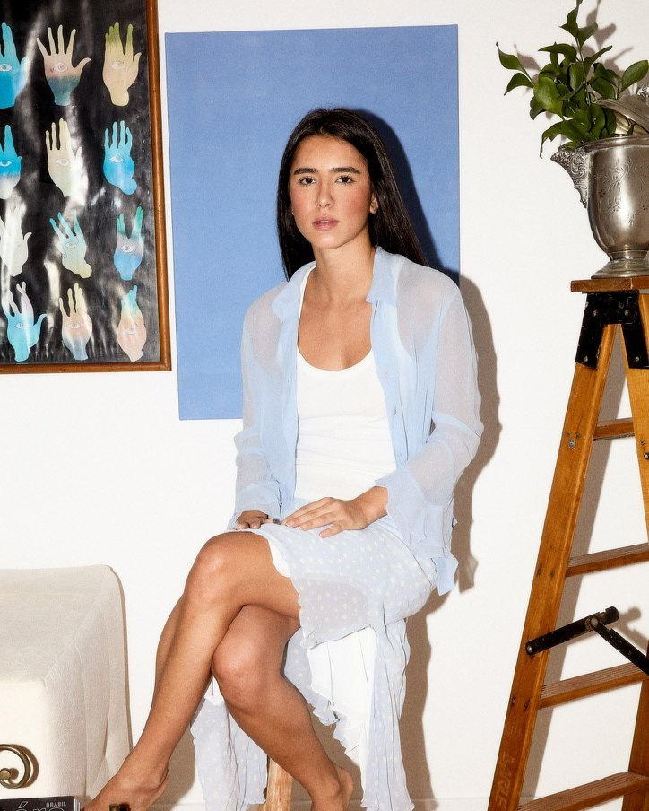

Co-founder · Estratégia
Marina Paiva
Veio do marketing digital de marcas como Schutz, Bloomberg e Genial Investimentos, onde cuidou de eventos, conteúdo, seeding e monitoramento de campanhas. Fundou a Verso para dar às marcas uma presença digital que só elas poderiam ter.